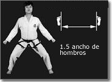

Segun el programa tecnico de la asociacion debera responder las siguientes preguntas.
¿Que representan las 24 Formas (Tules) del Taekwondo?
¿Donde comienza y termina una Forma (Tul)?
¿Como se le dice a los cinturones negros de I a III Dan?
Segun la siguiente imagen
¿Como se llama la posicion?
¿Como se llama la forma (Tul) Correspondiente al 7mo Gup?